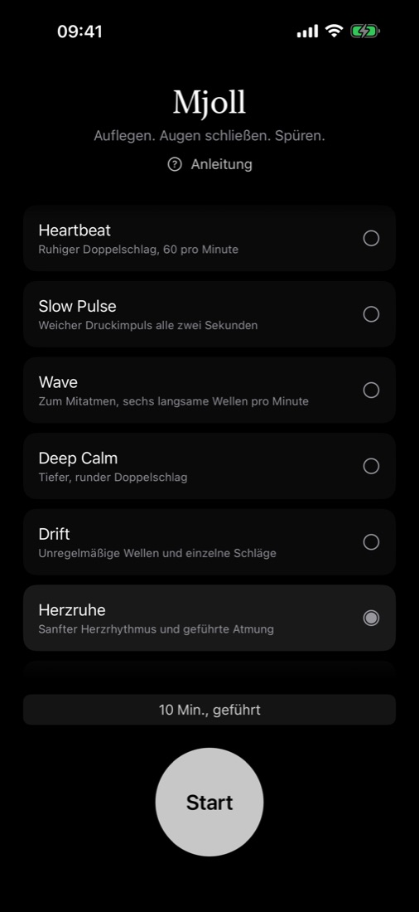
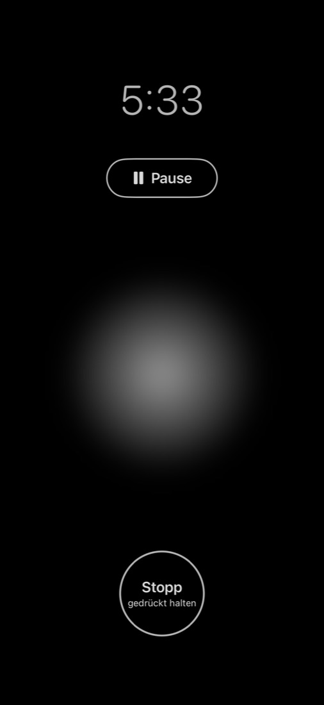
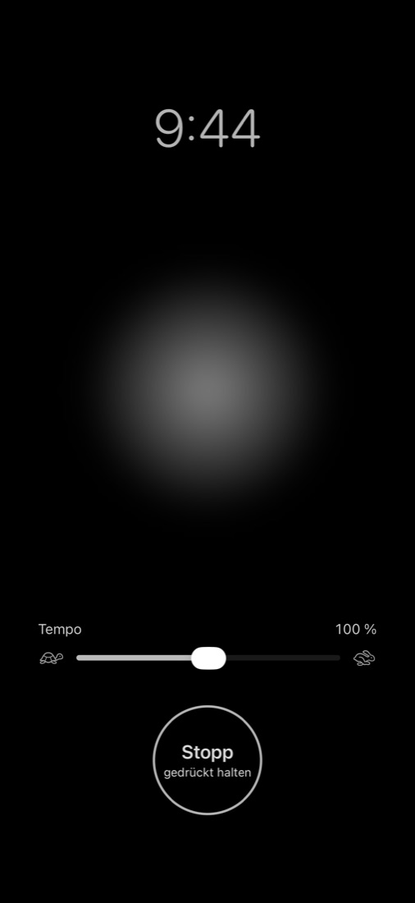
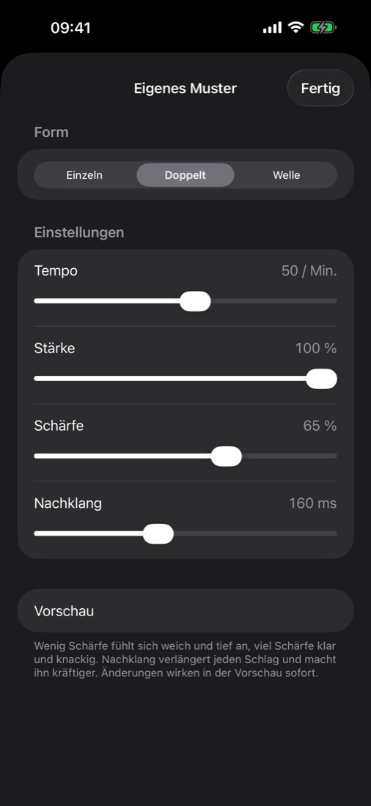

Mjoll Haptische Meditation fürs iPhone
Auflegen. Augen schließen. Spüren.
Mjoll ist eine ruhige iPhone-App für haptische Meditation. Sanfte Vibrationsmuster führen deine Aufmerksamkeit – kein Ton, nichts zum Anschauen. Programm wählen, Zeit einstellen, Augen schließen und spüren.

Mjoll ist altnordisch für frischen, leisen Schnee.
Bitte lies vor der ersten Session die Sicherheitshinweise. Nutze Mjoll nicht, wenn du einen Herzschrittmacher oder ein anderes Implantat hast.




Wo du es hinlegst
Am besten spürst du es dort, wo das iPhone Knochen berührt.
- Oben auf der Brust – leg dein iPhone hoch aufs Brustbein, knapp unter dem Hals. Im Sitzen oder Liegen, Display oben oder unten.
- Hand – halte es locker in der offenen Hand.
Wofür du es nutzen kannst
- Meditation – der Puls ist dein Anker. Wenn die Gedanken wandern, kehr zur Vibration zurück.
- Atemübung – wähle Wave. Einatmen, während die Welle anschwillt, ausatmen, während sie abklingt.
- Geführt – Herzruhe dauert zehn Minuten: ein sanfter Herzrhythmus zum Ankommen, langsame geführte Atmung, dann ein leises Ausklingen.
- Zur Ruhe kommen – vor dem Einschlafen ein ruhiges Programm und eine kurze Dauer wählen. Die Session endet von selbst.
Stell das Tempo jedes Programms nach deinem Gefühl ein – Mjoll merkt es sich.
Meditation ohne Ton
Mjoll arbeitet nur über Berührung. Keine Kopfhörer, keine Stimme, keine Musik. Es funktioniert mit geschlossenen Augen, im geteilten Raum, unterwegs – und auch, wenn du gehörlos oder schwerhörig bist.
Fragen vor dem Kauf
Merkt Mjoll, wenn meine Gedanken abschweifen?
Nein. Mjoll misst nichts an dir und wertet nichts aus. Der Puls ist ein Anker: Merkst du, dass deine Gedanken wandern, kehrst du selbst zu ihm zurück.
Kann ich das iPhone während einer Session sperren?
Nein. iOS spielt Haptik nur ab, solange die App geöffnet ist. Der Bildschirm bleibt deshalb an, fast schwarz gedimmt. Sperrst du das iPhone oder wechselst die App, pausiert die Session.
Gibt es ein Abo?
Nein. Mjoll ist ein Einmalkauf. Kein Abo, keine In-App-Käufe, kein Konto.
Funktioniert Mjoll ohne Internet?
Ja. Die App verbindet sich mit keinem Server. Nur Kauf und Download laufen über den App Store.
Auf welchen Geräten läuft Mjoll?
Auf dem iPhone mit iOS 17 oder neuer. Für iPad, Mac und Apple Watch gibt es Mjoll nicht.
Sichere Nutzung
Nutze Mjoll nicht, wenn du einen Herzschrittmacher, einen implantierten Defibrillator oder ein anderes Implantat hast, das durch elektronische Geräte oder Magnete beeinflusst werden kann. Mjoll bittet dich, das iPhone auf die Brust zu legen, also nahe an die Stelle, an der solche Geräte meist sitzen. Unsere klare Empfehlung: Verzichte in diesem Fall ganz auf Mjoll.
- Nutze Mjoll nie beim Autofahren, Radfahren oder an Maschinen. Mjoll lädt dich ein, die Augen zu schließen und deine Aufmerksamkeit nach innen zu richten.
- Schlaf nicht mit dem iPhone auf dem Körper ein, während es lädt. Längerer Hautkontakt mit einem warmen Gerät kann unangenehm sein oder Verbrennungen verursachen.
- Hör auf, wenn dir unwohl oder schwindelig wird. Hast du eine Herzerkrankung oder eine andere ernste Erkrankung oder bist schwanger, sprich vor der Nutzung von Mjoll mit deiner Ärztin oder deinem Arzt.
- Mjoll ist eine Wellness-App und kein Medizinprodukt. Sie ersetzt keine ärztliche oder psychotherapeutische Behandlung. In einer Krise wende dich an einen Arzt oder den Notruf.
Wünsche fürs nächste Update?
Mjoll entsteht bei einem einzelnen Entwickler. Wenn du eine Idee hast, einen Wunsch oder etwas, das besser laufen könnte, freue ich mich über deine Nachricht: mjollapp@icloud.com
Mjoll ist eine Wellness- und Entspannungs-App. Sie ist kein Medizinprodukt und dient nicht dazu, Krankheiten zu erkennen, zu behandeln oder ihnen vorzubeugen.